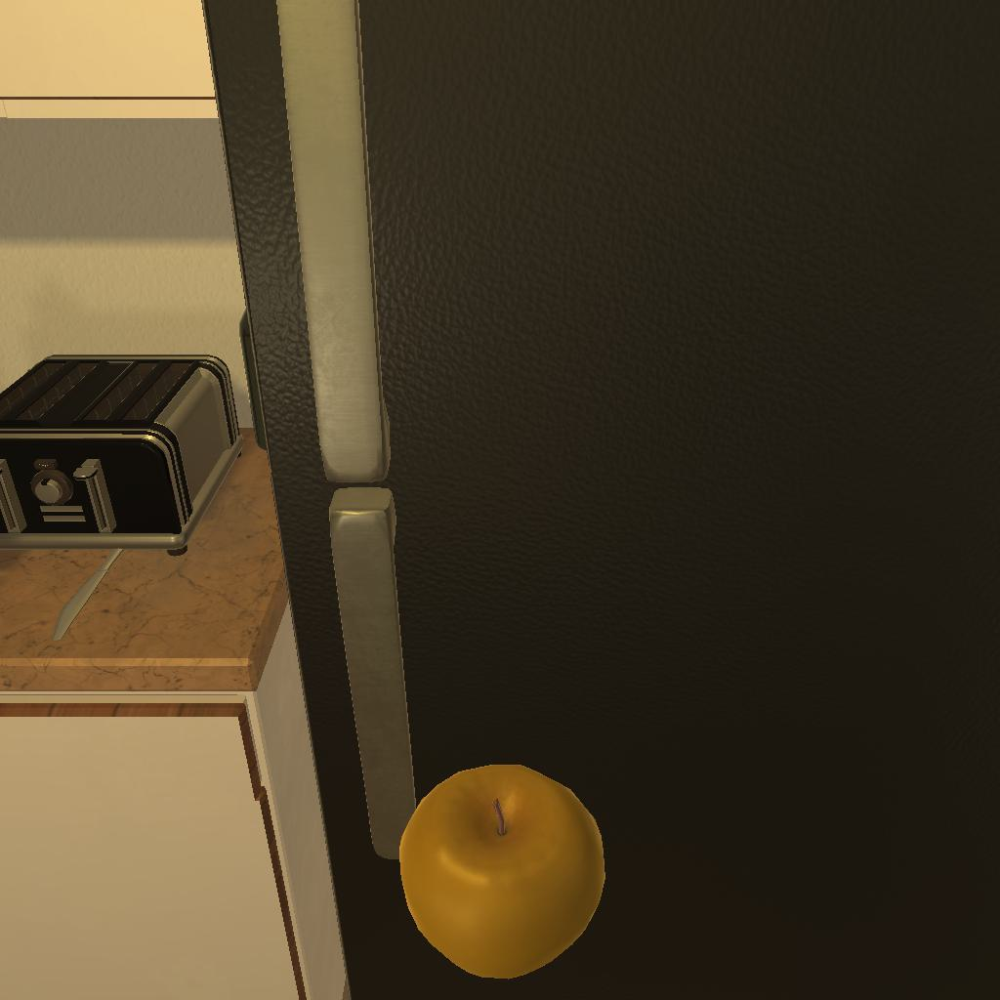
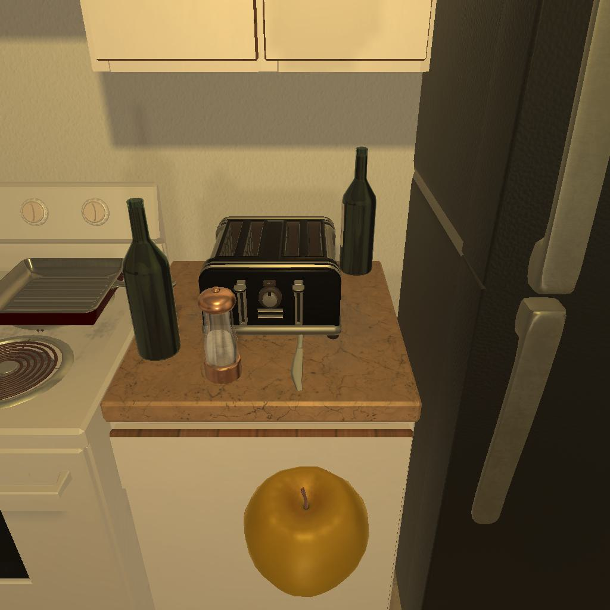

---------------------------------------------------------task: 14---------------------------------------------------------
--------------------------------------------------------------------------------------------------------------------------------------------------------------------
--------------------------------------------------------------------------------------------------------------------------------------------------------------------
Step:--------------------------------------------------------------------------13-------------------------------------------------------------------------------
----------------------------------------
VLM Prompt:
Image1:
Image2:
Image3:
**Instruction**
1. Analyze the provided images to identify all visible household objects and compare the difference between images (e.h. whether the object is opened or not and taken on hand or not), focusing on those relevant to the task description "put a cool apple in countertop."
2. Use the analysis of images and the task hint "The agent must find an object of the desired type, pick it up, go to a fridge, cool the object with the fridge, then find the correct location to place it, and put it down there. The agent does not need to use the fridge button or open the fridge to cool the object, and the agent just needs to do action that is "cool the object with the fridge"." to answer the question: what is the most reasonable action in the choices for the task description "put a cool apple in countertop"?
3. Decide and write the answer using the template: The answer is: (i): , where i is the real number. If there is no desired object in images, search every place based on **Initial Observation** to find the object. And if no one is exactly correct, choose a similar answer.
**Initial Observation**
You are in the middle of a room. Looking quickly around you, you can see microwave (1), countertop (1-2), cabinet (1-11), diningtable (1), drawer (1-3), sink (1), sinkbasin (1), toaster (1), stoveburner (1-4), fridge (1), coffeemachine (1), garbagecan (1)
**Answer Choices**
(1): go to microwave 1
(2): go to countertop 1
(3): go to cabinet 1
(4): go to diningtable 1
(5): go to drawer 1
(6): go to sink 1
(7): go to cabinet 2
(8): go to cabinet 3
(9): go to sinkbasin 1
(10): go to cabinet 4
(11): go to cabinet 5
(12): go to drawer 2
(13): go to toaster 1
(14): go to cabinet 6
(15): go to stoveburner 1
(16): go to cabinet 7
(17): go to fridge 1
(18): go to stoveburner 2
(19): go to stoveburner 3
(20): go to stoveburner 4
(21): go to drawer 3
(22): go to cabinet 8
(23): go to cabinet 9
(24): go to cabinet 10
(25): go to coffeemachine 1
(26): go to cabinet 11
(27): go to garbagecan 1
(28): put apple 1 in/on countertop 2
(29): examine apple 1
(30): examine countertop 2
**Answer**
Let's think step by step by following the instructions.
----------------------------------------
----------------------------------------
Original Response:
Firstly, we need to identify all visible household objects in the provided images. In Image1 and Image2, we can see a refrigerator, an apple on the countertop, a toaster, and part of a stove burner. Image3 shows us the same apple on the countertop, the toaster, two wine bottles, salt shaker, and pepper grinder.
Comparing the differences between the images, there seem to be no changes concerning the opening or handling of objects. The apple remains on the countertop in all images, the toaster is unused, and the refrigerator is closed.
Considering the task description "put a cool apple in countertop" and the hint provided, the agent does not need to use the fridge button or open the fridge to cool the object; they just need to perform an action that is "cool the object with the fridge."
From the initial observation, we know the location of the fridge and the countertop. The fridge is at location (1), and the countertop is at locations (1-2). Since the apple is already at the countertop and the task requires the agent to cool the apple with the fridge, the most reasonable action would be to take the apple to the fridge to cool it. However, the answer choices do not provide an option to cool the apple with the fridge directly.
Given the options, the closest action to what is required for the task is to go to the fridge, as this is where the agent would perform the action of cooling the apple. Therefore, based on the task description and the images provided:
The answer is: (17): go to fridge 1.
----------------------------------------
----------------------------------------
>>> Refine Original VLM Response and Get Pure Action: go to fridge 1
----------------------------------------
-----------------------------------------------------------------
Running time: 14.665424108505249 seconds
Total Money: 8.129910000000006
-----------------------------------------------------------------
-----------------------------------------------------------------
Text Observation:You arrive at loc 17. The fridge 1 is closed.
-----------------------------------------------------------------
UNSUCCEED